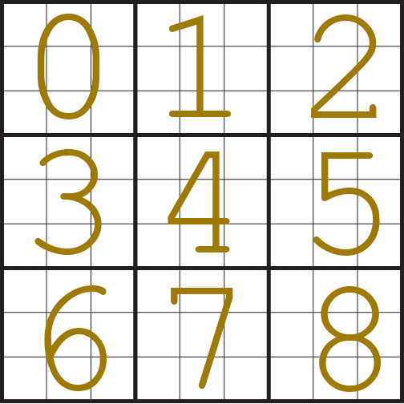

Description
In this problem, you will write a program that lets you play a puzzle game called G-Doku.
G-Doku is a generalized version of the well known puzzle game Sudoku.
Rules of the puzzle:
-
Puzzle board should be considered in terms of boxes, columns, rows.
-
In each cell, either a positive number is written or it's empty. For the purposes of this
homework, number 0 means it's an empty cell.
-
Initially, the puzzle board starts out empty. Therefore, in almost all the cases, there will be
multiple solutions.
-
In each box, column or row, the numbers in that box, column or row should sum up to a
predetermined positive number n.
-
Unlike Sudoku, Numbers can repeat in a column, row or a box.
-
Size of the puzzle is k^2 by k^2. Meaning the lengths of the sides are a square number. Also,
the boxes are a k by k square. Just like Sudoku.
Input taking part is already handled:
-
Variable
k: Given k, size of the puzzle board should be a
k^2 by k^2 square. You can assume it will always be a positive integer.
-
Variable
n: In the solution of the puzzle, sum of the numbers written
in a box, column or a row should add up to n. This number will always be integer and will be bigger than or equal to k^2
-
Variable
board: This variable is a list of lists whose values are initially set to 0.
It represents the current board of the game. For example, value of board[i][j] represents the
number written on i'th row j'th column of the puzzle. Therefore, its dimensions are k^2 by k^2.
Your Task
Your task in this homework is only to implement the functions
print_board(), make_move(mv) and verify_board()
- If you look at the bottom part of the given Main.py you will see that there is a while loop that calls these functions. This loop lets the player play the game using the console.
- Player have two commands:
-
If players enters the input
move <box_num> <box_pos> <value>.
After changing the number at the position <box_pos> in the box <box_num> to <value>
one of three things can happen:
-
If the resulting board is a solution, final board is printed and game ends.
-
If the resulting board is not a solution but a valid board (meaning no row, box or column adds up to a number bigger than n), board is updated and printed. Program waits for the next move.
-
If the resulting board is an invalid board, change is reverted and the board before this move is printed. Program waits for the next move.
-
If the player enters the input
end. Program terminates.
Function Definitions
print_board()
Purpose of this function is to print the values in the variable board in a well formatted fashion.
In each cell, values should be printed with whitespace-padding, therefore usage of f-strings is recommended.
If the value at that cell is 0, you should print whitespace instead of 0 as it is an empty cell.
Number of characters in each cell should be same as the number of digits of n. For example, for a puzzle where k = 3 and n = 125, an example board should be printed like this:
Since n has 3 digits, in each cell there are 3 characters, even if they are whitespace. Check the examples for other cases.
make_move(mv)
This function accepts a single parameter
mv. Purpose of this function is to change values in the variable
board given the parameter
mv.
-
mv should be assumed to be a tuple of three values:
-
First value represents the box number. You can assume it will always be between 0 and (k^2 - 1) both included.
-
Second value represents position in that box. You can assume it will always be between 0 and (k^2 - 1) both included.
-
Third number represents the new value to be put in the cell at that position.
After updating the
board, this function should return the
previous value at the cell it just updated.
verify_board()
Purpose of this function is to make summations on the board and check if rows, columns and boxes are valid. It should return either one of these three values:
-
If the board is invalid, meaning the numbers in at least one of the rows, columns or boxes sum up to a number bigger than n, it should return -1.
-
If the board is valid but unsolved, meaning the numbers in at least one of the rows, columns or boxes sum up to a number less than n, it should return 0.
-
If the board is solved, meaning the numbers in each row, column or box sum up to exactly n, it should return 1.
Extra guides:
Boxes are numbered. Consider the case when k = 3 (meaning it's same as a Sudoku board.). Following graphic depicts the box numbering:

In each box, cells are numbered using the same rule. Again, assume k = 3 and we zoom into the box number 0 in the above graphic, cell numberings are as follows:
Note that these values depend on the number k. More precisely, they go from 0 to k^2 - 1 both included.
This is the way "move" command in the console finds the cell it should update. For example
move 2 4 5 command would write the value 5 to the box number 2 and cell number 4.
Important suggestion: Since the code provided in Main.py uses all three functions that you need to implement, you won't be able to test them by yourself separately.
Therefore, it is suggested that you work on a separate file, test your functions and code there and once you are sure, put them in Main.py.
------------------------------------------------------------------
Check the examples for further clarification. Keep in mind that we will be grading your code not
just based on these examples, but other cases as well, so try to write code which can handle all
possible cases.
Warning: You are not allowed to use any imports and any topics that haven't been covered this
semester.